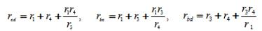
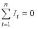

1.2.5. Расчет цепей постоянного тока
Целью расчёта электрической цепи постоянного тока является определение некоторых параметров на основе исходных данных, из условия задачи. На практике используют несколько методов расчёта простых цепей. Один из них базируется на применении эквивалентных преобразований, позволяющих упростить цепь. Под эквивалентными преобразованиями в электрической цепи подразумевается замена одних элементов другими таким образом, чтобы электромагнитные процессы в ней не изменились, а схема упрощалась.
Одним из видов таких преобразований является замена нескольких потребителей, включённых последовательно или параллельно, одним эквивалентным (rэ). Несколько последовательно соединённых потребителей можно заменить одним, причём его эквивалентное сопротивление равно сумме сопротивлений потребителей, включённых последовательно. Для n потребителей можно записать:
rэ = r1 + r2 +…+ rn
где r1 , r2, ..., rn – сопротивления каждого из n потребителей.
Преобразования в сложных цепях, где отсутствует в явном виде последовательное и параллельное соединение элементов (рисунок 2.8), начинают с замены элементов, включённых в исходной схеме треугольником, на эквивалентные элементы, соединённые звездой.
Рисунок 2.8. Преобразование элементов цепи: а – соединённых треугольником, б – в эквивалентную звезду.
На рисунке 2.8.а треугольник элементов образуют потребители r1, r2, r3. На рисунке 2.8.б этот треугольник заменён эквивалентными элементами ra, rb, rc, соединёнными звездой. Чтобы не происходило изменение потенциалов в точках a, b, с схемы, сопротивления эквивалентных потребителей определяются из выражений:
Упрощение исходной цепи можно также осуществить заменой элементов, соединённых звездой, схемой, в которой потребители соединены треугольником.
В схеме, изображённой на рисунке 2.9.а, можно выделить звезду, образованную потребителями r1, r3, r4. Эти элементы включены между точками c, b, d. На рисунке 2.9.б между этими точками находятся эквивалентные потребители rbc, rcd, rbd, соединённые треугольником.
Рис. 2.9. Преобразование элементов цепи: а – соединённых звездой, б – в эквивалентный треугольник.
Сопротивления эквивалентных потребителей определяются из выражений: 
Дальнейшее упрощение схем, приведённых на рисунках 2.8.б и 2.9.б, можно осуществлять путём замены участков с последовательным и параллельным соединением элементов их эквивалентными потребителями.
При практической реализации метода расчёта простой цепи с помощью преобразований выявляются в цепи участки с параллельным и последовательным соединением потребителей, а затем рассчитываются эквивалентные сопротивления этих участков. Если в исходной цепи в явном виде нет таких участков, то, применяя описанные ранее переходы от треугольника элементов к звезде или от звезды к треугольнику, проявляют их. Данные операции позволяют упростить цепь. Применив их несколько раз, приходят к виду с одним источником и одним эквивалентным потребителем энергии. Далее, применяя законы Ома и Кирхгофа, рассчитывают токи и напряжения на участках цепи.
Законы Кирхгофа устанавливают соотношения между токами и напряжениями в разветвленных электрических цепях произвольного типа. Законы Кирхгофа имеют особое значение в электротехнике из-за своей универсальности, так как пригодны для решения любых электротехнических задач. Первый закон Кирхгофа вытекает из закона сохранения заряда.
Он состоит в том, что алгебраическая сумма токов, сходящихся в любом узле, равна нулю: 
Например, для узла электрической цепи (рис. 2.10) уравнение по первому закону Кирхгофа можно записать в виде: I1 - I2 + I3 - I4 + I5 = 0
Рис. 2.10. Узел электрической цепи
Расчет сложных цепей постоянного тока предусматривает определение некоторых электрических параметров (в первую очередь токов и напряжений на элементах) на основе исходных величин, заданных в условии задачи. На практике используются несколько методов расчёта таких цепей. Для определения токов ветвей можно использовать: метод, базирующийся на основании непосредственного применения законов Кирхгофа, метод контурных токов, метод узловых напряжений.